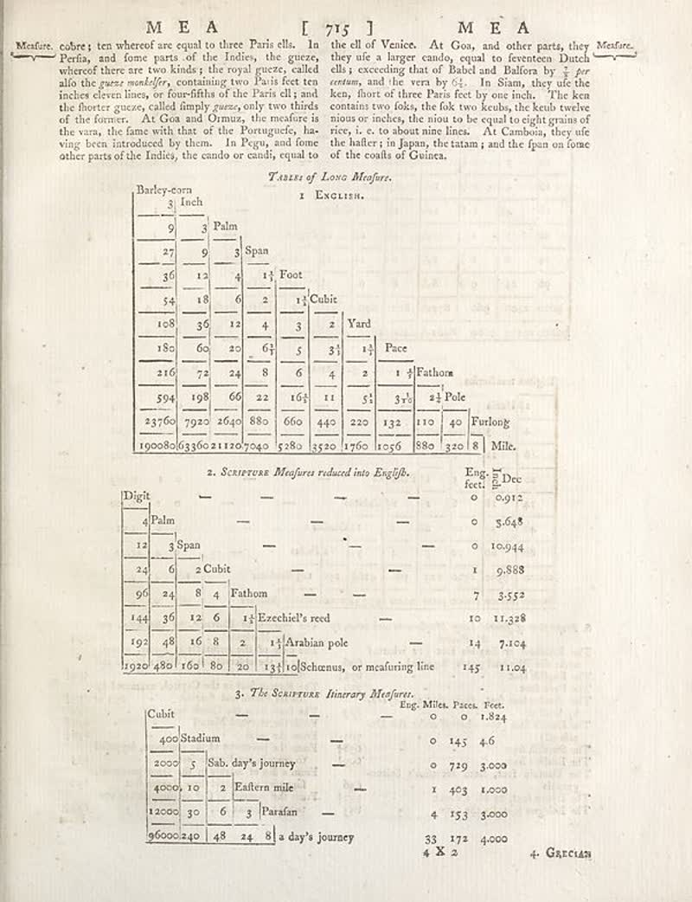

page-0944-3e9ba80e3606.jpg

Page ID: britannica:309f765b1ecc83e0a7f7762e44b4a927a7555443:train:944
Running head: M E A [ 715] M E A
Image SHA-256: 3e9ba80e36062b293c841f4da56710baedc83a81a59be0002f2bacd2223eb2e4

(untitled) [?]
Meature. cobres ten wherever are equal to three Paris ella. In Perla, and fame parts of the Indies, the guerz where there are two kinds a the royal pueze, called allo the _guers mondifer_, containing two Paris feet ten inches eleven lines, or four-fifths of the Paris eli and the thorter gucet, called simply means, only two finds of the former. At Goa and Ormuz, the meafore is the vars, as fans with this one of the Porugente, having been introduced by them. In Pegu, and some other parts of the Indies, the cando or candi, equal to
the ell of Venice. At Goa, and other parts, they use a larger cando, equal to fenteen Dutch alls preceding that of Bahd and Ballons by a par centum, and the vers by 64. In Siam, they use the lava, short of the Paris fet for one inch. The ken contains two dots, the folk two keedy, the keub twelve minor or inches, the nion to be equal to eight grains of one i, e. to shoot nine links. At Cambioia, they ule the latter; in Japan, the triatum and the fpan on fome of the cotails of Guinea.
## 2. Sculpture Meafures reduced into English.
## 3. The Sculpture Binary Meafers.
Eng. Miles. Paes. Fect.
\begin{tabular}{ccccccc}
**Barley-corn** & **3 Inch** & \multicolumn{4}{c}{**1 ENGLISH.**}\\
9 & 9 & 3 & Palm & & \\
27 & 9 & 9 & Span & & \\
36 & 12 & 4 & 13 & Foot & \\
54 & 18 & 6 & 2 & Cubit & \\
108 & 36 & 12 & 4 & 3 & Yard\\
180 & 60 & 20 & 63 & 31 & Pace\\
216 & 72 & 24 & 8 & 6 & 3 Fathora\\
594 & 198 & 66 & 22 & 132 & 110\\
23760 & 7920 & 2640 & 880 & 660 & 440\\
190080 & 63360 & 21120 & 7040 & 5280 & 320\\
\end{tabular}
\begin{tabular}{ccccccc}
**Digit** & & & & & **Eng-feet** & **Dec**\\
4 Palm & & & & & 0 & 0.912\\
12 3 Span & & & & & 0 & 3.648\\
24 6 2 Cubit & & & & & 0 & 10.944\\
96 24 8 4 Fathom & & & & & 7 & 3.552\\
144 36 12 6 13 Exechiel's reed & & & & & 10 & 11.328\\
192 48 16 8 2 13 Arabian pole & & & & & 14 & 7.104\\
1920 480 160 80 20 133 10 Schennus, or measuring line & & & & & 145 & 11.04\\
\end{tabular}
\begin{tabular}{cccccc}
**Cubit** & & & & **0** & **1.824**\\
400 Stadium & - & & 0 & 145 & 4.6\\
2000 5 Sab. day's journey & & 0 & 719 & 3.000 & \\
4000 10 2 Eastern mile & & 1 & 403 & 1.000 & \\
12000 30 6 3 Parafan & & 4 & 153 & 3.000 & \\
96000240 48 24 8 a day's journey & & 33 & 172 & 4.000 & \\
\end{tabular}
Matched article: Barleycorn (unit) (Wikipedia, revision 1350753661, re-rank score -4.25390625) · comparison